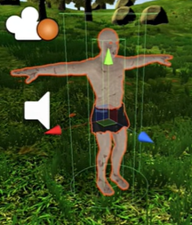

The video to the left shows gameplay of a game I made using Unity 3D. The game is a First Person Shooter, complete with two variants of enemies: Zombies and Boars. I used Github to find the assets needed for the game which included animations and material textures.
As I had experience using C and C++, I watched a unity 3D tutorial to learn how to implement features using C#. The transition over to C# was tricky at first, getting used to the differences between the languages I know already. However, after time, the prefabs became easier to complete as for the majority the basic behavior was the same for both player and enemy.
As the asset already had the terrarin, I started to create the player and set up the player movement using inputs from a keyboard. I then had to create the first person camera and assign a 'look around' script which used inputs from the mouse. Once the player could move around and explore the area without falling through the world I added player crouch and sprint settings which would increase the players movement speed from an input on the keyboard. I then added the player sounds for crunching of the grass as the player switched between movement speeds.
I then animated the player hand and the weapons. I used 6 types of weapons, 1 close range and 5 long range. I had to create a weapon handler which altered the attributes of each of the weapons and allowed the player to switch between the weapons using numerical keys on their keyboard. I then had to create a script for the player interface with the weapons and how the player would shoot or attack based on which range the weapon had.
I created a zoom animation which allowed the player to see a more focused viewpoint based off an input. This would be useful for the guns which required more precision. I had difficulty implementing this function as I chose the right mouse key for this function. As I was doing this on a laptop, I found it struggled to multi-task 2 inputs from my mouse pad. I chose a keyboard key to perform the zoom function as a result in order to test its functionality
I then created a prefab for the bullet and arrows which would eventually damage the enemies. Next I moved onto creating the enemy prefab, dictating their behavior and creating their animation changes based off reactions from the player. The enemy controller script had to be reactive to chase the player once it had been attacked or once the player was in a certain radius. I then did the same with the boar enemy. I then had to create the script to randomly spawn a set amount of enemies from certain areas around the map.
Finally, I added health and stamina bars to the top of the game. This showed the player how much damage they had taken and how much stamina they lost from sprinting.
I think this game was a great first start to my interest in games development and creative use of my technical skills. I learnt about physics in game play and alot about character controllers and collisions. The aspects I struggled with were the animations as it was a completely new concept to me however I found it very satisfying once it had been completed. In the future I would like to make a game which experiments around the use of physics in game development. I would also like to try out Unreal Engine 4 as this game engine uses C++, a language that I am more confident with.
